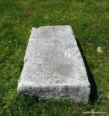
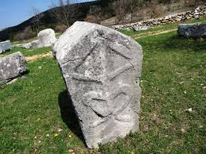

Physical appearance of Bosnian tombstones
 One of the most fascinating characteristics of Bosnian tombstones is their appearance and shape. They are monolithic blocks of cut and shaped stone, and they can be classified into 2 groups, standing and lying stones. Lying stones are more common and have more subclasses, while standing stones are very rare. The first type of lying stone is the plate, which is basically a large, flat block of stone, at least 30 cm of height. Box stones are the second type of lying stones. These tombstones have the shape of giant crates, and can be up to 150 cm long, 100 cm wide, and 80 cm tall. In addition to this type of stone, we also have box stones with podiums. The only difference between this type of stone and the regular box stones is that it has a podium beneath the block, sometimes made from separate stone.
 Another type of tombstone is the gabled tombstone. It is very similar to the box stone, but instead of a flat and horizontal roof, the roof is sloped, with a peak at the top. Sometimes they may have more than 2 slopes, creating a pyramid on the top of the stone. These tombstones may also come with a podium, although these can’t be found very often, making up only 9% of the total amount of tombstones.
.jpg) Standing tombstones are much rarer than their lying counterparts. There are only 2 subclasses, columns and crosses. Columns are the simpler version of standing stones. They are consisted of a slab of cut stone, and they often have sculptures cut into the upper part. They are very hard to come by, making up only 4% of the total amount of tombstones. Crosses are the rarest form of tombstones, shaped into a large cross. They appeared near the end of the Bosnian kingdom, so very few of them were produced, making up under 0.5% of the total amount of tombstones.
Standing tombstones are much rarer than their lying counterparts. There are only 2 subclasses, columns and crosses. Columns are the simpler version of standing stones. They are consisted of a slab of cut stone, and they often have sculptures cut into the upper part. They are very hard to come by, making up only 4% of the total amount of tombstones. Crosses are the rarest form of tombstones, shaped into a large cross. They appeared near the end of the Bosnian kingdom, so very few of them were produced, making up under 0.5% of the total amount of tombstones.